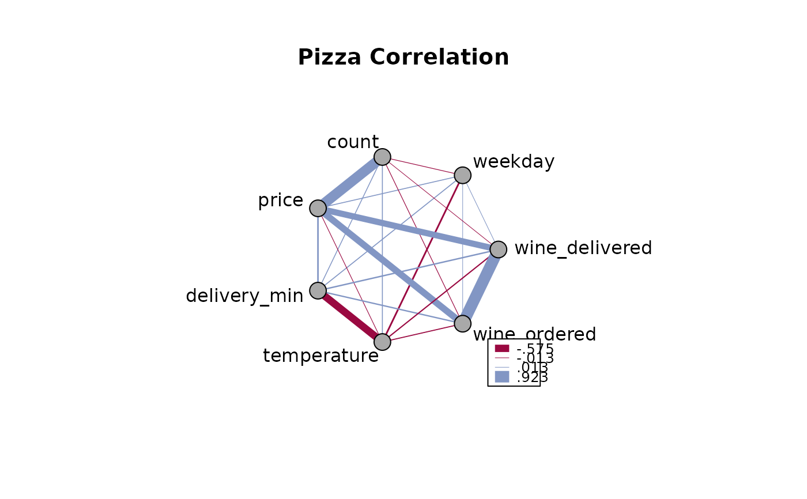
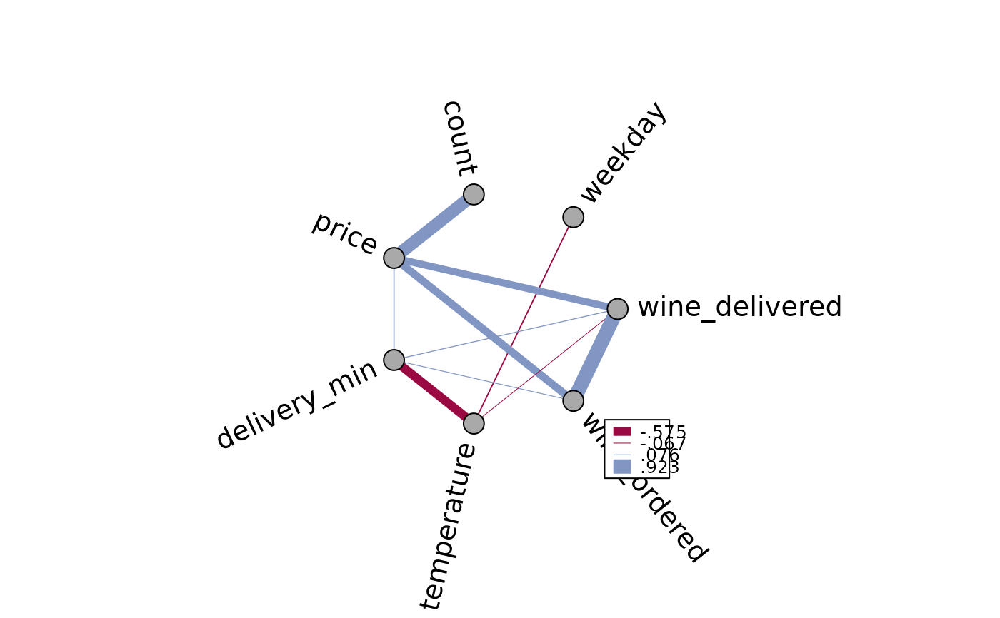

PlotWeb.RdThis plot can be used to graphically display a correlation matrix by using the linewidth between the nodes in proportion to the correlation of two variables. It will place the elements homogenously around a circle and draw connecting lines between the points.
PlotWeb(m, col = c(hred, hblue), lty = NULL, lwd = NULL, args.legend=NULL, pch = 21, pt.cex = 2, pt.col = "black", pt.bg = "darkgrey", cex.lab = 1, las = 1, adj = NULL, dist = 0.5, ...)
| m | a symmetric matrix of numeric values |
|---|---|
| col | the color for the connecting lines |
| lty | the line type for the connecting lines, the default will be |
| lwd | the line widths for the connecting lines. If left to |
| args.legend | list of additional arguments to be passed to the |
| pch | the plotting symbols appearing in the plot, as a non-negative numeric vector (see |
| pt.cex | expansion factor(s) for the points. |
| pt.col | the foreground color for the points, corresponding to its argument |
| pt.bg | the background color for the points, corresponding to its argument |
| las | alignment of the labels, 1 means horizontal, 2 radial and 3 vertical. |
| adj | adjustments for the labels. (Left: 0, Right: 1, Mid: 0.5) |
| dist | gives the distance of the labels from the outer circle. Default is 2. |
| cex.lab | the character extension for the labels. |
| ... | dots are passed to plot. |
The function uses the lower triangular matrix of m, so this is the order colors, linewidth etc. must be given, when the defaults are to be overrun.
A list of x and y coordinates, giving the coordinates of all the points drawn, useful for adding other elements to the plot.
Andri Signorell <andri@signorell.net>
m <- cor(d.pizza[, which(sapply(d.pizza, IsNumeric, na.rm=TRUE))[-c(1:2)]], use="pairwise.complete.obs") PlotWeb(m=m, col=c(hred, hblue), main="Pizza Correlation")#> Error in .Call("between_num_lr", as.numeric(x), as.numeric(rng[1]), as.numeric(rng[2]), PACKAGE = "DescTools"): "between_num_lr" not available for .Call() for package "DescTools"# let's describe only the significant corrs and start with a dataset d.m <- d.pizza[, which(sapply(d.pizza, IsNumeric, na.rm=TRUE))[-c(1:2)]] # get the correlation matrix m <- cor(d.m, use="pairwise.complete.obs") # let's get rid of all non significant correlations ctest <- PairApply(d.m, function(x, y) cor.test(x, y)$p.value, symmetric=TRUE) # ok, got all the p-values, now replace > 0.05 with NAs m[ctest > 0.05] <- NA # How does that look like now? Format(m, na.form = ". ", ldigits=0, digits=3, align = "right")#> weekday count price delivery_min temperature wine_ordered #> weekday 1.000 . . . -.105 . #> count . 1.000 .807 . . . #> price . .807 1.000 .095 . .510 #> delivery_min . . .095 1.000 -.575 .076 #> temperature -.105 . . -.575 1.000 . #> wine_ordered . . .510 .076 . 1.000 #> wine_delivered . . .478 .082 -.067 .923 #> wine_delivered #> weekday . #> count . #> price .478 #> delivery_min .082 #> temperature -.067 #> wine_ordered .923 #> wine_delivered 1.000 #> attr(,"class") #> [1] matrix arrayPlotWeb(m, las=2, cex=1.2)#> Error in .Call("between_num_lr", as.numeric(x), as.numeric(rng[1]), as.numeric(rng[2]), PACKAGE = "DescTools"): "between_num_lr" not available for .Call() for package "DescTools"#> Error in .Call("between_num_lr", as.numeric(x), as.numeric(rng[1]), as.numeric(rng[2]), PACKAGE = "DescTools"): "between_num_lr" not available for .Call() for package "DescTools"